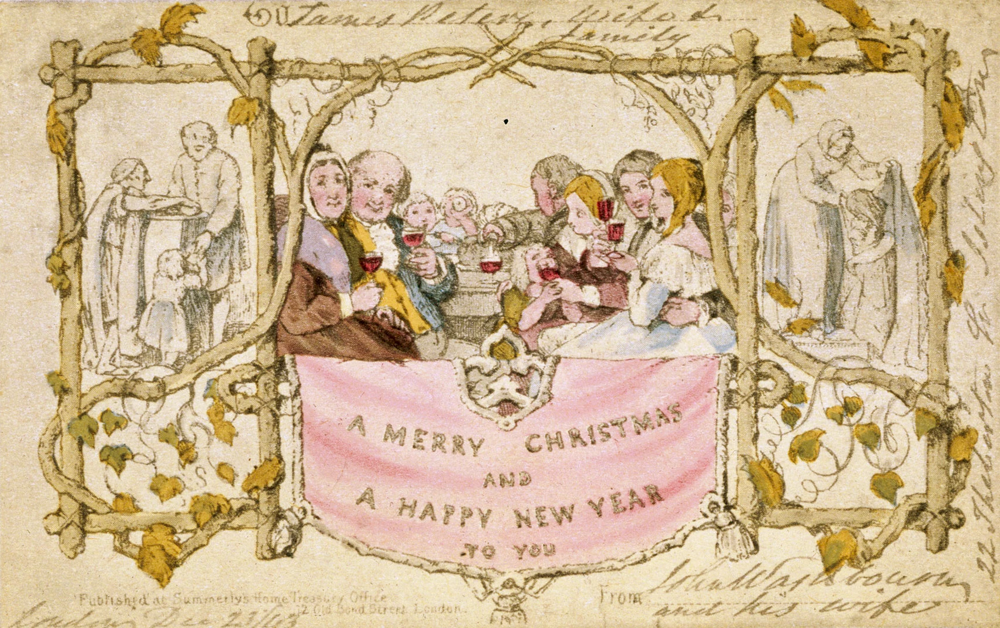
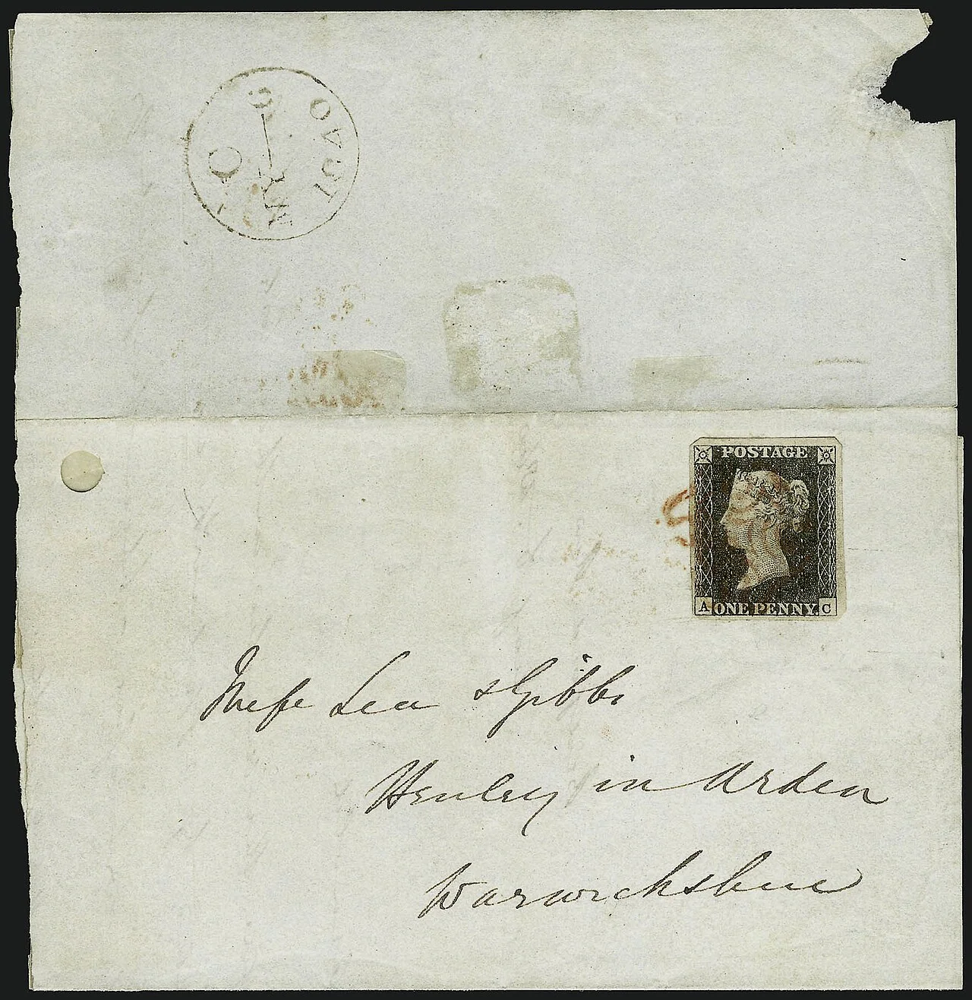
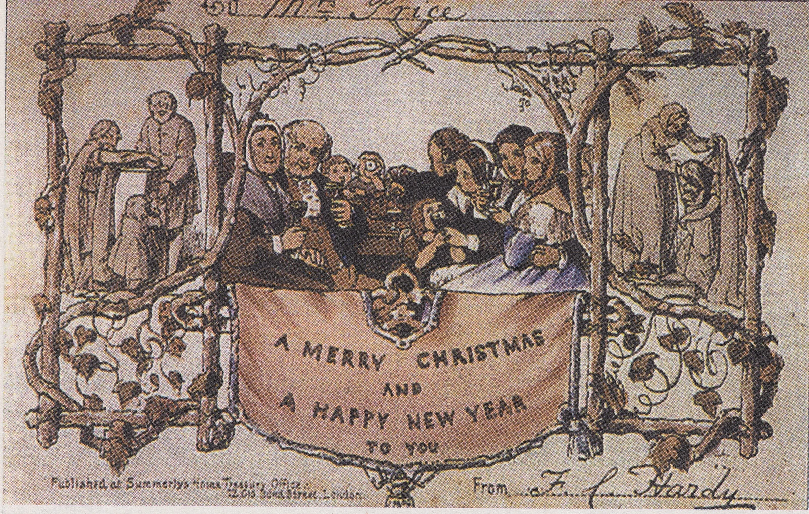

아직 펼치지 않은 카드성탄 풍습은 어떻게 시작됐을까 · 2세계 첫 성탄 카드1843년 런던에서 처음 팔린 성탄 카드예요. 무엇이 그려져 있을까요?세상에서 맨 처음 가게에서 판 성탄 카드래. 무슨 그림이 있을까?
1843년 12월영국 · 런던
세계 첫 성탄 카드
1843년 12월 런던, 바쁜 헨리 콜의 책상에는 답장하지 못한 편지가 쌓여 있었어요. 친구인 화가가 그린 그림을 돌판으로 찍고 한 장씩 붓으로 칠해, 세계 첫 성탄 카드가 만들어졌어요. 단추를 눌러 그 차례를 한 단계씩 따라가 보세요.
편지가 산더미처럼 쌓인 콜 아저씨가 그림 카드를 만들었대. 돌판으로 찍고, 붓으로 칠하고, 이름을 써서 보냈어. 같이 만들어 볼까?
검수 전 시안이에요(기준서 1판 보탬 10). 장면에는 박물관·도서관·경매 기록에 있는 것만 옮겼고, 기록마다 다른 점은 따로 적었어요. 만드는 차례 그림은 이 안내서가 그렸어요. 상상은 ‘눈 감고 상상해 보기’에만 썼어요.
시안 확인용카드 단계 미리 보기
1
답장이 밀린 12월
1840년 1월 10일, 영국은 반 온스(약 14그램)까지의 편지를 어디로 보내든 1페니만 받기로 했어요. 그해 5월 6일부터는 값을 미리 치렀다는 표시로 우표를 붙였어요. 헨리 콜은 이 ‘1페니 우편’을 이끈 로랜드 힐(Rowland Hill)과 함께 일한 사람이에요.
런던의 빅토리아 앨버트 박물관(V&A)에 따르면, 1843년 성탄이 다가오자 바쁜 콜의 책상에는 답장하지 못한 편지가 쌓여 있었어요. 콜은 시간을 아낄 꾀를 내어, 친구인 화가 존 콜콧 호슬리(John Callcott Horsley)에게 그림을 부탁했어요.

편지 보내는 값이 1페니로 싸지자 편지가 많이 오갔어. 콜 아저씨 책상에도 답장 못 한 편지가 잔뜩 쌓였대.
물어보기답장할 편지가 산더미처럼 쌓이면, 너라면 어떻게 할래?
2
12월 17일 저녁
콜의 일기에는 그날 저녁이 한 줄로 남아 있어요.
“저녁에 호슬리가 와서, 성탄 카드 그림을 가져왔다.”
헨리 콜의 일기, 1843년 12월 17일 · 이 안내서가 옮김
그림은 세 칸이에요. 가운데에서는 한 가족이 잔을 들고, 양옆에서는 가난한 이웃에게 먹을 것과 옷을 건네요. V&A는 가운데 그림을 손으로 칠하고, 양옆 나눔 장면은 흑백으로 두었다고 설명해요.
콜 아저씨 친구인 화가가 저녁에 카드 그림을 가져왔대. 가운데는 가족이 잔을 들고 ‘메리 크리스마스!’ 하는 그림이야.
물어보기카드 그림을 부탁받는다면, 너는 가운데에 무엇을 그릴래?
3
한 장씩, 손으로
그림은 돌판에 옮겨 찍었어요. 이렇게 돌판으로 찍는 방법을 석판 인쇄라고 해요. 물에 떨어뜨린 기름이 물과 섞이지 않는 것처럼, 기름 크레용으로 그린 곳에만 잉크가 묻고 물에 젖은 곳은 잉크를 밀어내요.
런던 홀번의 워릭 코트에 있던 인쇄소 잡스(Jobbins)가 1,000장을 찍었고, 색칠을 일로 하는 ‘색칠장이’ 윌리엄 메이슨(William Mason)이 붓으로 색을 칠했어요. 아래 단추를 눌러 그 차례를 따라가 보세요.
단추를 누를 때마다 첫 성탄 카드가 한 단계씩 만들어져요.
이 안내서가 그린 첫 성탄 카드의 짜임 · 1843년 카드(퍼블릭 도메인)를 바탕으로 사람과 틀을 간단히 줄여 그렸어요 · 손글씨 이름은 2001년 경매에 나온 콜 부부의 카드(경매 회사 설명)를 바탕으로 썼어요
카드 한 장에 닿은 손
- 그린 손 · 호슬리
- 찍은 손 · 잡스 인쇄소
- 칠한 손 · 메이슨
- 쓴 손 · 보내는 사람
다 만들었어요. 한 사람이 그리고, 한 곳에서 찍고, 한 사람이 칠하고, 보내는 사람이 이름을 써서, 첫 성탄 카드 한 장이 길을 떠났어요.
돌판을 커다란 도장처럼 써서 똑같은 그림을 여러 장 찍었어. 그다음엔 붓으로 한 장씩 색칠했대.
물어보기붓으로 칠한다면, 너는 무슨 색부터 칠할래?
4
남은 카드들
카드는 한 장에 1실링이었어요. V&A의 큐레이터는 일하는 사람의 하루 품삯쯤이었다고 말해요. 콜이 쓰고 남은 카드는 함께 일하던 출판업자 조지프 컨들(Joseph Cundall)이 ‘서머리의 홈 트레저리’ 가게에서 팔았어요. ‘서머리’는 콜이 컨들과 일할 때 쓰던 다른 이름이에요.
이 사진은 같은 카드의 또 다른 한 장이에요. 앞 장면의 카드와 견주어 보면 띠와 옷의 색이 다르고, 맨 위와 아래 칸의 손글씨도 달라요.

콜이 가진 카드에는 호슬리가 서명 대신 오른쪽 아래에 아주 작은 자기 얼굴을 그리고 ‘Xmasse, 1843’이라고 적었어요. 헨리와 메리언 콜이 ‘할머니와 샤 이모(Granny and Aunt Char)’에게 보낸 카드는 2001년 11월 24일 영국 디바이지스의 경매에 나왔어요. 두 사람의 서명이 그대로 남아 있었어요.
남은 카드마다 이름이 다르게 쓰여 있어. 화가 아저씨는 콜 아저씨 카드에 자기 얼굴을 쪼그맣게 그려 넣었대!
물어보기앞의 카드와 이 카드, 무슨 색이 달라 보여?
눈 감고 상상해 보기
1843년 12월 런던의 저녁. 창밖으로 마차 바퀴가 덜컹거리며 지나가요. 책상 위에는 아직 답장하지 못한 편지 더미, 막 마른 카드에서 나는 물감 냄새. 펜촉이 ‘To’ 뒤의 빈칸을 사각사각 채워요.
눈을 감아 봐. 마차 소리가 덜컹덜컹. 펜으로 할머니 이름을 사각사각 써.
나의 자리
올해 성탄에 꼭 인사를 건네고 싶은 사람은 누구인가요? 그 사람에게 무엇을 빌어 주고 싶나요?
카드를 한 장 만든다면 누구에게 줄래? 무슨 그림을 그릴까?
마음에 닿는 한 줄을 고르거나 직접 써 보세요. 한 줄을 남기면 이 자리의 도장이 찍혀요. 이 기기에만 저장돼요.
더 깊이
궁금한 칸만 펼쳐 읽어도 괜찮아요.
알고 보면
석판 인쇄 1798년 독일 뮌헨의 알로이스 제네펠더가 찾아낸 인쇄법이에요. 기름과 물이 섞이지 않는 성질을 써서, 평평한 판에 그린 그림을 여러 장 찍어 내요.
둘째 성탄 카드 다음 성탄 카드는 1848년에 화가 윌리엄 모 에글리(William Maw Egley)가 그렸어요. 날짜 ‘1848’을 ‘1842’로 잘못 읽어 한때 이 카드가 첫 카드로 여겨졌어요. 에글리의 카드도 즐거운 잔치와 이웃 돕기를 함께 그렸어요.
반 페니 우편 1894년 반 페니 우편이 생기자 성탄 카드가 더 많이 팔렸어요.
기록마다 다른 점
몇 장을 찍었나 V&A와 큐레이터 인터뷰는 약 1,000장이라고 해요. 두 번에 걸쳐 모두 2,050장(첫 인쇄 1,000장)을 찍었다는 기록도 있어요. 색을 칠하지 않은 흑백 카드는 6펜스에 팔았다는 이야기도 전해져요(런던 역사 해설가 리처드 존스).
잘 팔렸나 V&A는 장사로는 실패였다고 하고, 큐레이터 인터뷰도 값이 비싸다는 말을 들었다고 해요. 옥스퍼드 보들리언 도서관의 글은 ‘잘 팔렸지만’이라고 적었어요.
그림을 그린 때 콜의 일기에는 1843년 12월 17일 저녁에 그림이 왔다고 적혀 있어요. 같은 해 5월 1일에 그렸다고 적은 자료도 있어요.
남은 카드 1977년 케네스 로(Kenneth Rowe)가 찾아낸 카드는 21장이었어요. 기네스 세계 기록과 위키백과(영어)는 열두 장이 남았다고 적었어요.
2001년 경매 값은 경매 회사의 사진 설명에 2만 2,500파운드, 기네스 세계 기록에 2만 파운드, 위키백과(영어)에 2만 2,250파운드로 적혀 있어요. 받는 사람도 경매 회사 설명은 ‘할머니와 샤 이모’, 기네스는 ‘어머니’라고 달리 적었어요.
더 보기
처음 만든 사람들의 기록을 직접 읽어 볼 수 있어요.
여섯 단계 끝까지 금박
첫 성탄 카드를 여섯 단계 끝까지 만들어 보면 카드에 금박이 입혀져요.
여섯 단계를 끝까지 해 보기
아이와 함께 채색
아이와 함께 ‘영화처럼 보기’를 끝까지 보면 카드가 채색돼요.
아이와 함께 ‘영화처럼 보기’를 끝까지 보기
근거 보기 (11)
- V&A 박물관 「The first Christmas card」 — 콜의 일기(1843년 12월 17일), 바쁜 콜과 답장 못 한 편지, 친구 호슬리에게 부탁, 가운데만 손 색칠·양옆 흑백, 약 1,000장, 손글씨 인사, 1실링, 장사로는 실패, 호슬리의 작은 자기 얼굴과 ‘Xmasse, 1843’, 에글리의 1848년 카드(1842로 잘못 읽힘), 1페니 우편과 1894년 반 페니 우편
- 컬처 트립, V&A 큐레이터 팀 트래비스 인터뷰 — 잡스 인쇄소(홀번 워릭 코트)의 석판 인쇄 1,000장, 색칠장이 윌리엄 메이슨, 1실링은 하루 품삯쯤, 남은 카드는 컨들이 ‘서머리의 홈 트레저리’에서 팖, 값이 비싸다는 평
- 옥스퍼드 보들리언 도서관 존 존슨 모음 블로그 — 콜은 로랜드 힐과 1페니 우편(1840)에서 일함, ‘잘 팔렸지만’, 1,000장 석판·손 색칠, 다음 상업용 카드는 1848년
- 스미스소니언 국립 우편 박물관 「The World’s First Postage Stamps」 — 1840년 1월 10일 반 온스 편지 1페니, 우표는 1840년 5월 6일부터 쓸 수 있음
- 브리태니커 「lithography」 — 기름과 물이 섞이지 않는 성질, 1798년 알로이스 제네펠더
- History of Information — 1843년 5월 1일 그렸다는 기록, 두 번 2,050장(첫 인쇄 1,000장), 컨들의 가게 이름과 ‘서머리’라는 다른 이름, 1977년 케네스 로가 찾은 21장, 2001년 경매
- 메리 에번스 사진 자료(헨리 올드리지 앤드 선 경매 사진) — 콜 부부가 ‘할머니와 샤 이모’에게 보낸 카드, 두 사람의 서명, 2001년 11월 24일 디바이지스, 2만 2,500파운드
- 기네스 세계 기록 「First printed Christmas card」 — 처음 찍은 1,000장 가운데 12장이 남음, 2001년 경매 2만 파운드, ‘어머니에게 보낸 카드’라는 설명
- 리처드 존스(런던 역사 해설) — 두 번 2,050장, 흑백 6펜스·색칠 1실링, 잡스 인쇄소와 색칠장이 메이슨(전해지는 이야기로 밝힘)
- 위키백과(영어) 「Christmas card」 — 길잡이로만(두 번 2,050장, 2001년 경매 값 2만 2,250파운드, 12장이 남았다는 말)
- 위키미디어 공용: 1843년 카드 사진(두 장)과 1840년 5월 6일 편지 사진 정보
그림·사진·소리 출처
‘처음 만나는 기독교 문화’의 깊은 카드예요. 카드 단계와 남긴 글은 이 기기에만 저장돼요.